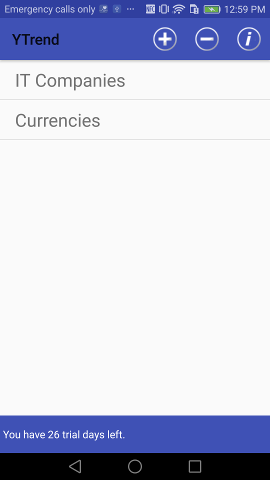
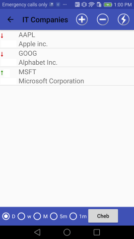
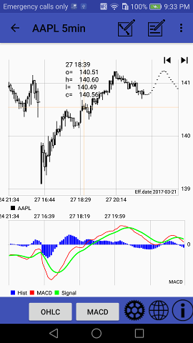

After the app has been started, it enters into Groups selection screen:

User can add new group there by pressing + button or delete group by pressing - button (new form will be appear) Or user can enter into existing group by pressing one of Groups buttons.
i icon provides access to that manual.
Inside group user gets acces to symbols (i.e. indicies, currency pairs, other financial instruments):

He can add new symbols by search in Yahoo finance listed symbols. Yahoo driven suggest system allows to search not only by symbol's name but by it's description substring also.
Pressing to button leads to scan group and provide most close movement prediction.
Bottom toolbar contains selector that allows to select Daily/Weekly/Monthly or some Intraday timeframes.
Chart's settings are available from the next, Charts, screen.
Pressing on some symbol in Symbols panel leads to Charts panel:

Pinch gesture allows to change the chart scale.
Top panel:
- : menu - time frame selector + current date reset.
- - shows dialog to add/edit symbol's comment;
- - turns to line draw mode:
Line draw mode
User can draw lines by fingers in that mode.
Press line draw mode button again to save your line & leave draw mode.
Button under chart allows to add to chart one of classic indicators: MA - upto 6 various MA lines; BB - Bollinger bands; SAR; FBB - Fibonacci Bollinger Bands; Price Channel.
And another button allows to select one of oscillators like MACD, Volume+Chaikin, BB%B, Slow and Fast Stochastic, RSI, CCI, ADX and more
There are some other buttons on the bottom toolbar:
- - after user set cursor on some date and press eye button, selected date becomes new effective (i.e. last)
- - Market Scanner web app link;
- - indicators settings. By pressing it user will enter into the Settings screen. It allows to tune indicators' settings